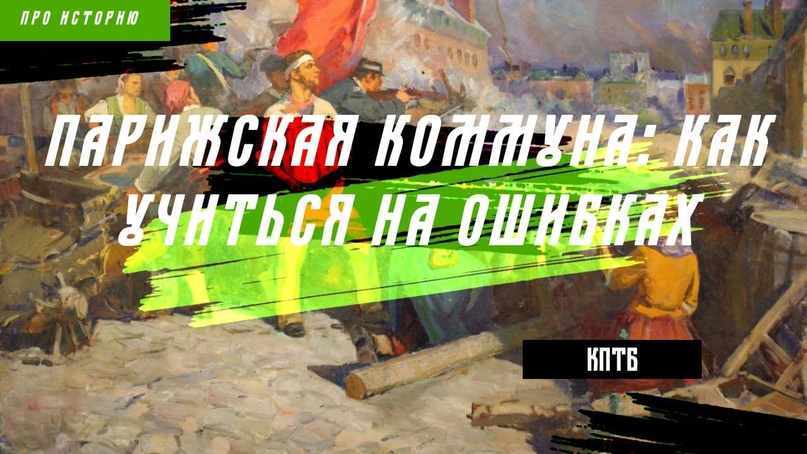
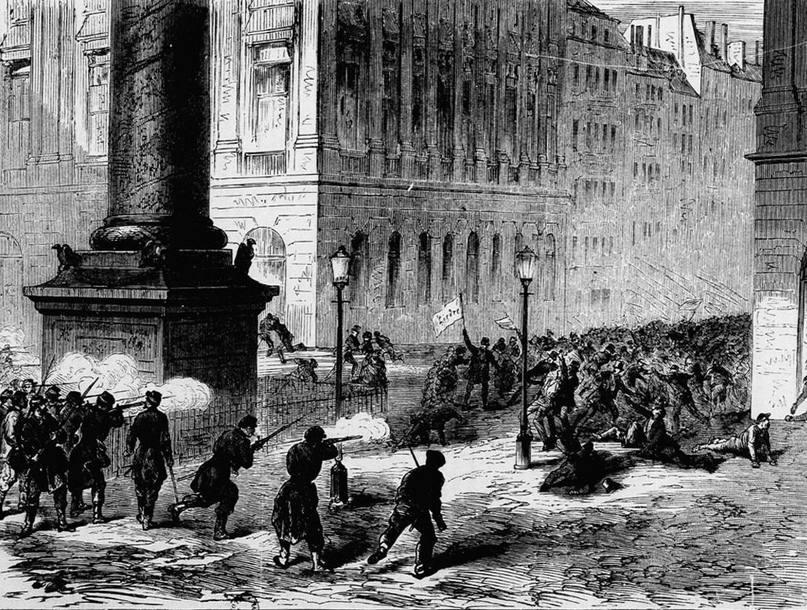

Парижская коммуна: как учиться на ошибках

Парижская коммуна… Два слова, столь дорогих рабочему классу. Первая историческая форма диктатуры пролетариата — власти рабочих.
Феномен прошедшей сто пятьдесят лет назад Парижской Коммуны до сих пор нуждается в изучении, причём не только постадийного развития, причин и следствий, но и дальнейшего анализа опыта первой пролетарской революции марксистами и революционерами.
Как известно, любая революция является результатом развития революционной ситуации, которая в свою очередь возникает из противоречий, нараставших в процессе функционирования существующего строя и Парижская коммуна не является исключением.
Предыстория
“Неудачная война с Германией, мучения во время осады, безработица среди пролетариата и разорение среди мелкой буржуазии; негодование массы против высших классов и против начальства, проявившего полную неспособность, смутное брожение в среде рабочего класса, недовольного своим положением и стремившегося к иному социальному укладу; реакционный состав Национального собрания, заставлявший опасаться за судьбу республики, - все это и многое другое соединилось для того, чтобы толкнуть парижское население к революции 18 марта, неожиданно передавшей власть в руки национальной гвардии, в руки рабочего класса и примкнувшей к нему мелкой буржуазии. . ( В. И. Ленин.”Памяти Коммуны” В.И. Ленин, ПСС (изд. 5-ое), М.: Госполитиздат, 1961, т.20, стр. 217-222)
Вторая Республика началась и закончилась президентством Луи-Наполеона Бонапарта, ставшего позже императором Наполеоном III, а ещё позже с одобрения и по просьбе плебисцита поменявшим Конституцию, и таким образом сделавшим Францию наследственной империей. Однако после такой контрреволюции противоречия капитализма только усугубились:
На социальные полумеры по улучшению качества жизни рабочих (создание образовательных и лечебных учреждений, либерализация трудового законодательства, оказание бесплатной юридической помощи малоимущим, призыв к созданию государственного страхового фонда, введение маргарина вместо масла) денег не хватило.
Неумелая торговая политика (тарифное соглашение с Великобританией) привела к разорению множества французских буржуа и как следствие - росту нищеты и безработицы.
Никуда не делся и спутник любого реакционного переворота - усиление полицейского гнёта.
Разрубить клубок противоречий предполагалось “маленькой победоносной войной”, франко-прусской, закончившейся осадой Парижа, пленением и свержением императора. Во главе страны стал заклятый друг императора, Адольф Тьер, позже названный “кровавым”, который проводил политику солидаризма (Бордоский договор), монархизма и закручивания гаек, при этом введя меры (требование уплаты по векселям, требование уплаты квартирных денег, закон о назначении городских мэров правительством, а главное - серия приказов, уничтожающих Национальную гвардию), ставшие поводом для восстания Парижской Коммуны.
Пожалуй самая красноречивая характеристика Тьеру дана в труде “Гражданская война во Франции”:
“Мастер мелких государственных плутней, виртуоз в вероломстве и предательстве, набивший руку во всевозможных банальных подвохах, низких уловках и гнусном коварстве парламентской борьбы партий; не останавливающийся перед тем, чтобы раздуть революцию, как только слетит с занимаемого поста, и потопить ее в крови, как только захватит власть в свои руки; напичканный классовыми предрассудками вместо идей, вместо сердца наделенный тщеславием, такой же грязный в частной жизни, как гнусный в жизни общественной, даже и теперь, разыгрывая роль французского Суллы, Тьер не может удержаться, чтобы не подчеркнуть мерзости своих деяний своим смешным чванством.” (К. Маркс и Ф. Энгельс. Сочинения. Т.17 – М.: Государственное издательство политической литературы, 1960 – С. 326-327)
Хронология Парижской Коммуны
10 марта национальное собрание в Бордо приняло два декрета. В силу первого декрета местопребыванием правительства и национального собрания объявлен Версаль; вторым декретом постановлено, что все векселя, которым срок истёк 13 ноября, должны быть оплачены к 13 марта, то есть в двухдневный срок. Этим вся мелкая буржуазия, которая ещё имела что терять и представляла элемент сравнительно мирно настроенный, осуждена была на гибель: в течение 5 дней, с 13 по 17 марта, в Париже опротестовано было не менее 150 000 векселей. Парижский депутат Мильер настоятельно требовал от собрания, чтобы оно допустило дальнейшую отсрочку платежа квартирных денег, которые 6 месяцев уже не вносились. Но собрание воздержалось от всякого постановления по этому вопросу. Этим 200—300 тысяч рабочих, ремесленников, мелких торговцев, истративших все свои сбережения и никакой работы не находивших, преданы были на волю и милость домовладельцев. Таким образом, Тьер сразу же настроил против себя ополчение в Париже.
15 марта Тьер прибыл в Париж и приказал овладеть пушками национальной гвардии, которые собраны были на высотах Монмартра и охранялись весьма слабым караулом. Движение войска на Монмартр, произведённое на рассвете 18 марта, удалось; но для того, чтобы увезти пушки, не захватили с собой упряжи и лошадей. Пока войска дожидались упряжи, собралась национальная гвардия. Солдаты побратались с гвардейцами и арестовали своих высших начальников; генерал Леконт, отдавший приказ стрелять в толпу, был расстрелян своими солдатами, та же участь постигла и генерала Клемента Тома, бывшего командующего национальной гвардии, оказавшегося поблизости.
Утром 18 марта 1871 г. Париж был разбужен громовыми криками: «Vive la Commune!(Да здравствует Коммуна!)» Что же такое Коммуна, этот сфинкс, задавший такую тяжелую загадку буржуазным умам?

«Парижские пролетарии», - писал Центральный комитет в своем манифесте о 18 марта, - «видя несостоятельность и измену господствующих классов, поняли, что для них пробил час, когда они должны спасти положение, взяв в свои руки управление общественными делами… Они поняли, что на них возложен этот повелительный долг, что им принадлежит неоспоримое право стать господами собственной судьбы, взяв в свои руки правительственную власть».
n(К. Маркс и Ф. Энгельс. Сочинения. Т.17 – М.: Государственное издательство политической литературы, 1960 – С. 339)
Власть в Париже перешла к центральному комитету национальной гвардии. Всякому округу и всякой более-менее значительной городской общине предлагалось по собственному усмотрению устанавливать свой политический и социальный строй, представительство же общенациональных интересов предполагалось возложить на конгресс делегатов отдельных общин. На 26 марта были назначены выборы в общинный совет. В голосовании приняли участие 225 тысяч человек из 485 тысяч зарегистрированных избирателей. В состав совета были избраны 71 коммунар и 21 противник Коммуны; последние или не приняли полномочий, или вскоре их сложили. После дополнительных выборов 16 апреля Совет Коммуны был сформирован. Орган состоял из 78 членов, почти поровну представленных из якобинцами, социалистами и бланкистами. Хуже всего, что в совете занимали места люди, больше связанные с пропагандистской работой, нежели с управленческой деятельностью. Все эти факторы тормозили слаженную работу органов власти. Подтверждением этого тезиса может являться тот факт, что лишь к 19 апреля была опубликована “Декларация к французскому народу” - единственный акт, содержавший программу Совета и то в самых общих чертах, и свидетельства самих коммунаров, что деятельность совета даже в обороне Парижа представляла картину розни и разброда.
Однако при всех просчётах были и достижения:
Разрешено было не платить домовладельцам квартирных денег с октября 1870 года по июль 1871 года, отсрочены платежи по векселям, приостановлена продажа просроченных залогов.
6 мая постановлено, что все вещи, заложенные в ломбарде ранее 26 апреля, в сумме не превышающей 20 франков, и состоящие из одежды, белья, мебели, книг и рабочих инструментов, могут быть получены обратно без выкупа.
Запрещены были вычеты из заработной платы, ночная работа в пекарнях;
Определён минимальный размер вознаграждения для лиц, состоящих в услужении;
Решено при всех подрядах и поставках для города отдавать предпочтение рабочим ассоциациям перед частными предпринимателями.
Декрет от 16 апреля передавал производительным ассоциациям все промышленные заведения, покинутые владельцами, причём за последними сохранено было право на вознаграждение.
Коммуна признала за незаконнорождёнными все права законных детей;
Декретировалось отделение церкви от государства, с прекращением отпуска всяких сумм на духовенство;
Церковные имущества объявила народной собственностью;
Делались попытки к введению республиканского календаря;
Принято красное знамя.
Зарплата чиновников и управленцев приравнивалась а зарплате рабочего.
21 апреля был утверждён следующий состав комиссий Коммуны:
Военная комиссия — Делеклюз, Тридон, Авриаль, Ранвье, Арнольд.
Комиссия финансов — Белэ, Бийорэ, Виктор Клеман, Лефрансэ, Феликс Пиа.
Комиссия общественной безопасности — Курне, Верморель, Ферре, Тренке, А. Дюпон.
Комиссия продовольствия — Варлен, Паризель, Э. Клеман, Артюр Арну, Шампи.
Комиссия юстиции — Гамбон, Дерёр, Клеманс, Ланжевен, Дюран.
Комиссия труда и обмена — Тейс, Малон, Серрайе, Ш. Лонге, Шален.
Комиссия внешних сношений — Лео Мелье, Шарль Жерарден, Амуру, Жоаннар, Урбен.
Комиссия общественных служб — Остен, Везинье, Растуль, Ант. Арно, Потье.
Комиссия просвещения — Курбе, Вердюр, Жюль Мио, Валлес, Ж. Б. Клеман.
Из-за отсутствия общей программы и профессионализма представителей на местах, почти все комиссии не выполняли поставленных задач:
Полиция, во главе которой стоял прокурор коммуны, Рауль Риго, ничего не знала и ничего не замечала; антикоммунарские газеты, которые утром запрещались, вечером свободно продавались на бульварах; всюду проникали агенты версальского правительства.
Национальная гвардия не удосужилась занять неприступный форт Мон-Валерьян, по ошибке оставленный версальцами.
Совет коммуны издал декрет об обязательной службе в батальонах национальной гвардии всех граждан Парижа от 17- до 40-летнего возраста; но, при полной бездеятельности полиции, эта мера не усилила рядов федералистов ни одним солдатом.
Управляемое таким образом государство не могло не рухнуть. И результаты не заставили себя ждать. Из-за отсутствия согласованности действий парижан с остальными провинциями восстания в других промышленных центрах (Тулон, Марсель, Лимож) были оперативно подавлены, а способная объединить восстания программа Коммуны появилась слишком поздно.
21 мая версальцы без боя вступили в Париж, но им предстояло ещё завоевать улицы Парижа, заграждённые сильными баррикадами. Началась восьмидневная уличная битва, 28 мая наступил конец борьбе: весь Париж был уже в руках версальцев. Последний оплот коммунаров — форт Венсен — был сдан 29 мая, после чего начали свою работу военно-полевые суды. Монархический, ретроградный террор Третьей Республики начал своё чёрное дело.
Парижская Коммуна просуществовала 72 дня — с 18 марта по 28 мая 1871 года.
Отражение Парижской Коммуны в работах В. И. Ленина
Основные причины поражения Коммуны Владимир Ильич видел в следующем:
- Непоследовательность и вялость пролетариата, являющихся прямым следствием его несознательности.
“Но две ошибки погубили плоды блестящей победы. Пролетариат остановился на полпути: вместо того, чтобы приступить к «экспроприации экспроприаторов», он увлекся мечтами о водворении высшей справедливости в стране, объединяемой общенациональной задачей; такие, например, учреждения, как банк, не были взяты, теории прудонистов насчет «справедливого обмена» и т. п. господствовали еще среди социалистов. Вторая ошибка — излишнее великодушие пролетариата: надо было истреблять своих врагов, а он старался морально повлиять на них, он пренебрег значением чисто военных действий в гражданской войне и вместо того, чтобы решительным наступлением на Версаль увенчать свою победу в Париже, он медлил и дал время версальскому правительству собрать темные силы и подготовиться к кровавой майской неделе.” (В. И. Ленин.” Уроки Коммуны “, «Заграничная Газета» № 2, 23 марта 1908 г)
В октябре эти ошибки были учтены в полной мере:
Великая Октябрьская Социалистическая революция проводилась под кратким, непротиворечивым и понятным лозунгом из шести слов:” Землю - крестьянам! Фабрики - рабочим! Мир - народам “., что обеспечило наиболее широкую поддержку народных масс
“Комбинировать наши три главные силы: флот, рабочих и войсковые части так, чтобы непременно были заняты и ценой каких угодно потерь были удержаны: а) телефон, б) телеграф, в) железнодорожные станции, г) мосты в первую голову.” ( В. И. Ленин. “Советы постороннего.”)
Как известно, Октябрьская революция была молниеносной и в этом было её большое преимущество.
2. Стихийный характер коммуны.
“Коммуна возникла стихийно, ее никто сознательно и планомерно не подготовлял.”( В. И. Ленин. “Памяти Коммуны” В.И. Ленин, ПСС (изд. 5-ое), М.: Госполитиздат, 1961, т.20, стр. 217-222)
Именно стихийность и погубила Парижскую Коммуну и Ленин, тогда ещё будущий практик Революции, не мог этого не учесть. Вывод, сделанный Владимиром Ильичем, был убойным в силу своей правильности и при этом очевидным, словно азбука: революция должна иметь план преобразования государства после. Ещё Макиавелли говорил, что
“…Судьба распоряжается лишь половиной всех наших дел, другую же половину, или около того, она предоставляет самим людям. Я уподобил бы судьбу бурной реке, которая, разбушевавшись, затопляет берега, валит деревья, крушит жилища, вымывает и намывает землю: все бегут от нее прочь, все отступают перед ее напором, бессильные его сдержать. Но хотя бы и так, — разве это мешает людям принять меры предосторожности в спокойное время, то есть возвести заграждения и плотины так, чтобы, выйдя из берегов, река либо устремилась в каналы, либо остановила свой безудержный и опасный бег?
То же и судьба: она являет свое всесилие там, где препятствием ей не служит доблесть, и устремляет свой напор туда, где не встречает возведенных против нее заграждений. …
…Если государь всецело полагается на судьбу, он не может выстоять против ее ударов. Я думаю также, что сохраняют благополучие те, чей образ действий отвечает особенностям времени, и утрачивают благополучие те, чей образ действий не отвечает своему времени.
…Осторожный государь, когда настает время применить натиск, не умеет этого сделать и оттого гибнет, а если бы его характер менялся в лад, со временем и обстоятельствами, благополучие его было бы постоянно.” (Никколо Макиавелли. “Государь”. Гл. XXV), поэтому, взяв власть, меньше всего стоит полагаться на судьбу (вообще, сдаётся мне, Владимир Ильич в своё время проштудировал “Государя” очень внимательно, ибо почти все идеи Макиавелли были воплощены в жизнь.)
Собственно, Владимир Ильич Ленин, видимо, был единственным политиком, знавшим, что дальше делать со взятой в Российской империи властью, потому как хотя бы план ГОЭЛРО, под прототип которого было подведено обоснование ещё немецкими экономистами, просто так за пять минут в голове не рождается.
3. Неразборчивость в точке опоры.
“Только рабочие остались до конца верны Коммуне. Буржуазные республиканцы и мелкие буржуа скоро отстали от нее: одних напугал революционно-социалистический, пролетарский характер движения; другие отстали от него, когда увидели, что оно обречено па неминуемое поражение. Только французские пролетарии без страха и устали поддерживали свое правительство, только они сражались и умирали за него, то есть за дело освобождения рабочего класса, за лучшее будущее для всех трудящихся. ( В. И. Ленин.”Памяти Коммуны” В.И. Ленин, ПСС (изд. 5-ое), М.: Госполитиздат, 1961, т.20, стр. 217-222)
Вывод из этого был сделан однозначный: пролетариат как движущая сила революции, должен быть и её основным костяком с минимальными влияниями других классов, и одновременно с максимальным влиянием на них. Собственно, Ленин был здесь не одинок: не зря же в ходе расследования Пермской катастрофы(измена ряда бывших офицеров царской армии во время Гражданской войны) Иосиф Виссарионович Сталин и Феликс Эдмундович Дзержинский для укрепления фронта затребовали соединения сознательных рабочих (пролетариев) и заменили ими соединения сомневающихся и неопределившихся крестьян.
Также были сделаны практические выводы: в рабоче-крестьянском правительстве было много профессионалов не только в марксистской теории, но и в теории организации (Сталин, Дзержинский, Молотов), а также привлекались узкие профессионалы (Брусилов, Шапошников, Графтио), что позволило Советской России не только выстоять в Гражданской войне, но и вместе с этим(одновременно!) произвести титанического масштаба реформы и заложить основу для коллективизации и индустриализации.
Заключение
При всех ошибках и недостатках Парижской Коммуны нельзя не признать её прогрессивного характера, который отмечали в своих работах и Плеханов, и Бакунин, и Маркс, и Энгельс, и Ленин.
А также нельзя не сделать ещё один вывод: Коммуну подавили, но она дала бесценный опыт для установления дальнейших форм диктатуры пролетариата. И в криках расстреливаемых коммунаров, и в бесчеловечных командах генерала Галифе, и в звуках выстрелов рано уже слышится мотив будущего “Интернационала”, и в лужах крови уже проглядывала заря социализма, и когда пули версальцев вонзались в тела рабочих, когда после последних слов настало время виселиц, гильотин и кандалов, на другом конце Евразии, в Симбирске, уже учился говорить мальчик, что заложит основы самого передового в мире социалистического государства. И теперь, когда это государство пало, наша задача и наш долг продолжать воплощение идеи освобождения трудящихся от оков капиталистической эксплуатации с учётом прошлого опыта и исправлением ошибок. Нам в том числе необходимо оценивать как опыт Коммуны, так и опыт Советов, а особенно причины их падения, дающие ценные уроки в грядущих битвах. Коммуна показала, что это возможно. Наша задача превратить возможность в реальность.